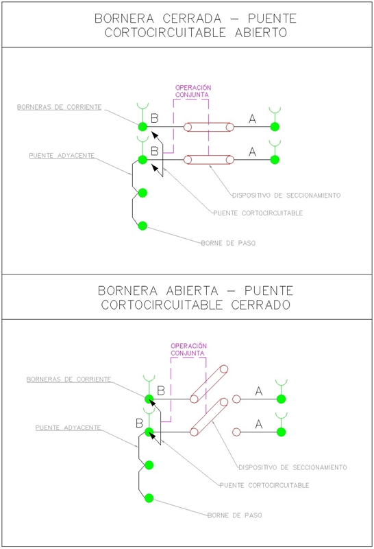
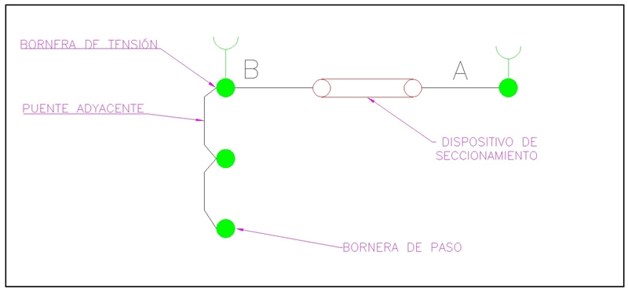
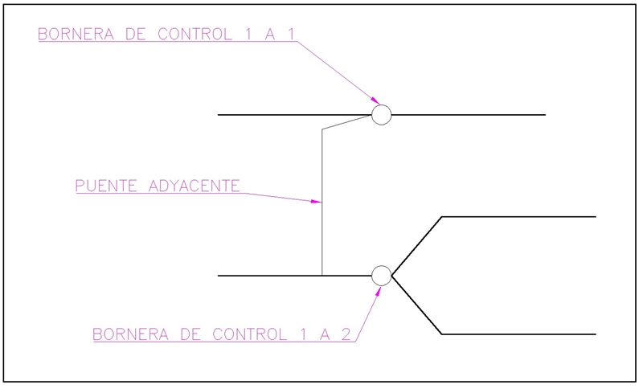
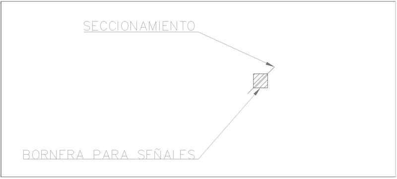

Siempre es más fácil conocer las normas ENEL-CODENSA
Rolex Rolex gold watch, compared with ordinary materials, gold watches are often expensive, but the replica rolex gold watch has the role of swiss replica watches hedging, so that it often becomes the first choice for collectors. The gold watch has value in the world, largely because the omega replica watch brand launched a commemorative limited edition watch or a replica hublot complex movement process or artistic attainments deep watches, mostly preferred gold precious metals such material. These watches tend to have a strong hedging function, therefore, Rolex Rolex gold watch reputation.

ET-AT931 Borneras para uso en subestaciones AT y MT de CODENSA
Datos adicionales
Número de especificación
ET-AT931
Fecha de vigencia
01/10/2018
Herramientas adicionales
- Contenido Ocultar
- 1. OBJETO
- 2. ALCANCE
- 3. CONDICIONES DE SERVICIO
- 4. SISTEMA DE UNIDADES
- 5. NORMAS DE FABRICACIÓN Y PRUEBAS
- 6. GENERALIDADES
- 7. BORNERAS DE CORRIENTE Y ACCESORIOS
- 8. BORNERAS DE TENSIÓN Y ACCESORIOS
- 9. BORNERAS DE PASO O CONTROL Y ACCESORIOS
- 10. BORNERAS DE CONTROL SECCIONABLES (PARA SEÑALES) Y ACCESORIOS
- 11. ENSAYOS DE LABORATORIO
- 12. REQUISITOS DE LAS OFERTAS
- 13. SUMINISTRO Y RECEPCION
- 13.1 RECEPCIÓN
- 13.2 MOTIVOS DE RECHAZO.
- 14. GARANTÍA DE FABRICA
- 15. INSPECCIÓN EN FABRICA
- 16. CERTIFICADOS DE CONFORMIDAD
1. OBJETO
Establecer las características técnicas mínimas que debe cumplir cada tipo de bornera listadas a continuación:- Corrientes.
- Tensiones.
- Control.
- Señales.
2. ALCANCE
Especificación de las características de las borneras de corriente, tensión, control, comunicación y de los accesorios que se deben incluir para realizar cualquier arreglo de conexión.3. CONDICIONES DE SERVICIO
Las borneras de tableros de control y protección de subestaciones A.T y M.T serán empleados a la intemperie bajo las siguientes condiciones:| CARACTERÍSTICAS AMBIENTALES | |
| a. Altura sobre el nivel del mar | Desde 2900 a los 600 m.s.n.m. |
| b. Ambiente | Tropical |
| c. Humedad relativa | Desde 100% al 20% |
| d. Temperatura máxima y mínima | +45 °C y -5 °C respectivamente |
| e. Temperatura promedio | 14 °C |
4. SISTEMA DE UNIDADES
Todos los documentos tanto de la propuesta como del contrato de suministro, deben expresar las cantidades numéricas en unidades del Sistema Internacional (SI). Si el oferente utiliza en sus libros de instrucción, folletos o dibujos, unidades en sistemas diferentes, debe hacer las conversiones respectivas.5. NORMAS DE FABRICACIÓN Y PRUEBAS
- Deben ser construidos en material termoplástico altamente resistente a sustancias químicas y al envejecimiento (IEC 60947-7-1/-2).
- Deben soportar altas temperaturas en forma permanente sin recibir daños o deformaciones en su estructura (DIN EN 60352 T4, IEC 60947-7-1/-2, IEC 60695-2-11).
- Las partes metálicas de los bornes de conexión deben ser aleaciones de cobre de alta calidad resistentes a la corrosión (DIN 50018).
- Se deben cumplir con las normas nacionales e internacionales y las pruebas establecidas por la NTC 2154, DIN-VDE, IEC y deben ser aprobadas por la UL.
Pueden emplearse otras normas internacionalmente reconocidas equivalentes o superiores a las aquí señaladas, siempre y cuando se ajusten a lo solicitado en la presente especificación técnica.
Las normas citadas en la presente especificación (o cualquier otra que llegare a ser aceptada por CODENSA S.A. ESP.) se refieren a su última revisión.
6. GENERALIDADES
Para cualquier tipo de bornera descrita en este documento, se deben tener en cuenta los siguientes aspectos generales:- Los bornes se deben fabricar con la posibilidad de inyectar tensión y corriente para pruebas de equipos.
- Todas las borneras o regletas deberán ser fabricadas en Nylon (Poliamida VO), auto-extinguible, libre de halógenos, inmune a la mayoría de solventes industriales y a la acción de termitas.
- Los bornes son para uso sobre riel OMEGA DIN 35.
Para borneras con mecanismo de resorte se deben tener en cuenta los siguientes aspectos:
- Libres de reapriete.
- Inmunidad a vibración en ejes X, Y y Z (DIN EN 61373, IEC 60068-2-6).
- Acceso frontal.
- Rápida conexión respecto a otros sistemas.
- Deben evitar el aflojamiento involuntario (IEC 60068-2-27).
- Deben brindar una conexión libre de mantenimiento bajo todo tipo de condiciones.
- El resorte deberá ser de acero inoxidable.
- La barra de corriente deberá ser cobre electrolítico estañado.
Todo el conjunto deberá ser altamente resistente a corrosión ambiental, con una temperatura máxima de trabajo permanente igual a 105 °C.
7. BORNERAS DE CORRIENTE Y ACCESORIOS
Las borneras de corriente poseen la función de seccionamiento y cortocircuito de forma simultánea, lo cual se logra mediante un mecanismo que asegure que nunca quedará una corriente abierta mientras se realiza el seccionamiento, y una vez abierto el borne completamente, la corriente seguirá su camino por el lado de la conexión, dejando libre al equipo conectado por el otro lado del borne.Las características y accesorios de estos elementos son los que se aprecian en la siguiente tabla .
| LISTADO DE ELEMENTOS REQUERIDOS |
| BORNERAS |
| Bornera seccionable y corto-circuitable para conectar conductores de sección |
| 0,5-6 mm2 (26-8 AWG), corriente nominal 30A tensión nominal 600V |
| Bornera de paso para conectar conductores de sección 0,5-6 mm2 (26-8 AWG), corriente nominal 30A tensión nominal 600V |
| ACCESORIOS |
| Puentes corto-circuitables de 2, 4 o 5 puntos In (Mínima) 40A |
| Puentes adyacentes de 2 o 3 puntos In (Mínima) 40A |
| Tapas para borneras |
| Accesorios para bloqueo de la bornera |
| Accesorios para operación de la bornera |
| Accesorios para la marcación de los bornes |
| Freno para el conjunto de bornes |
| Elementos de protección y sellamiento para el conjunto de bornes |
El diagrama de estas borneras se presenta a continuación.

8. BORNERAS DE TENSIÓN Y ACCESORIOS
Las borneras de tensión poseen la función de seccionamiento, dado que los sistemas de tensiones no corren riesgos en caso de que se interrumpa la corriente que pasa por estos bornes, dejando tensión a un lado, y un sistema completamente des-energizado del otro.Las características y accesorios de estos elementos son los que se aprecian en la siguiente tabla
| LISTADO DE ELEMENTOS REQUERIDOS |
| BORNERAS |
| Bornera seccionable para conectar conductores de sección 0,5-6 mm2 (26-8 AWG), corriente nominal 30A tensión nominal 600V |
| Bornera de paso para conectar conductores de sección 0,5-6 mm2 (26-8 AWG), corriente nominal 30A tensión nominal 600V |
| ACCESORIOS |
| Puentes adyacentes de 2 o 3 puntos In (Mínima) 40A |
| Tapas para borneras |
| Accesorios para bloqueo de la bornera |
| Accesorios para operación de la bornera |
| Accesorios para la marcación de los bornes |
| Freno para el conjunto de bornes |
El diagrama de estas borneras se presenta a continuación.

9. BORNERAS DE PASO O CONTROL Y ACCESORIOS
Estas borneras se usan en fuerza y control, tanto para distribuir alimentaciones de corriente continua o alterna, como para el inter-conexionado de equipos para cumplir con funciones de control y/o protección.Las características y accesorios de estos elementos son los que se aprecian en la siguiente tabla.
| LISTADO DE ELEMENTOS REQUERIDOS |
| BORNERAS |
| Bornera punto a punto 1 a 1 (Dos puntos) o 1 a 2 (Tres puntos) para conectar conductores de sección 0,2-4 mm2 (30-10 AWG), corriente nominal 30A tensión nominal 600V |
| Bornera punto a punto 1 a 1 (Dos puntos) o 1 a 2 (Tres puntos) color verde-amarillo para conectar conductores de tierra de sección 0,2-4 mm2 (30-10 AWG), corriente nominal 30A tensión nominal 600V |
| ACCESORIOS |
| Puentes adyacentes o alternos In (Mínima) 40A |
| Tapas para borneras |
| Accesorios para la marcación de los bornes |
| Frenos para el conjunto de bornes |
EL diagrama para este tipo de borneras se presenta a continuación.

10. BORNERAS DE CONTROL SECCIONABLES (PARA SEÑALES) Y ACCESORIOS
Las borneras para señales son similares a las borneras de paso. Sin embargo, poseen la facilidad del seccionamiento, para realizar verificación y pruebas de los diferentes tipos de señales.El sistema de seccionamiento se diferencia de las borneras de tensión en que son bornes de menor tamaño, dado que las corrientes que circulan por este tipo de bornes son de menor intensidad.
Las características y accesorios de estos elementos son los que se aprecian en la siguiente tabla.
| LISTADO DE ELEMENTOS REQUERIDOS |
| BORNERAS |
| Bornera interrumpible para conectar conductores de sección 0,2-4 mm2 (30-10 AWG), corriente nominal 30A tensión nominal 600V |
| ACCESORIOS |
| Tapas para borneras |
| Accesorios para la marcación de los bornes |
| Frenos para el conjunto de bornes |
La figura para este tipo de borneras se presenta a continuación.

11. ENSAYOS DE LABORATORIO
El registro completo de los ensayos de las borneras debe estar disponible para CODENSA S.A. ESP., durante el tiempo que dure la fabricación y por los dos años siguientes a su terminación.Todos los ensayos solicitados en las normas correspondientes de esta especificación se deben realizar por parte del fabricante y se deben entregar a CODENSA S.A. ESP.
Los laboratorios de pruebas deberán ser laboratorios certificados a nivel nacional por los entes competentes.
12. REQUISITOS DE LAS OFERTAS
La oferta técnica deberá entregarse en medio magnético. El oferente deberá incluir con su propuesta la siguiente información:- Relación de los bienes cotizados.
- Información del oferente, relación de clientes, evidencia de su capacidad técnica y experiencias relacionadas con los materiales y/o equipos cotizados.
- Listado de normas técnicas aplicables a los bienes cotizados.
- Planilla de características técnicas garantizadas indicada en el anexo1, la cual deberá ser diligenciada completamente por el oferente. Esta planilla debe entregarse en formato Excel.
- Catálogos originales, completos y actualizados, que contengan características técnicas principales correspondientes a los bienes cotizados en la planilla de características técnicas garantizadas.
- Protocolos de pruebas de acuerdo con las normas indicadas en esta especificación en laboratorios certificados y/o reconocidos a nivel nacional. En tales protocolos se deberán anotar las fechas de fabricación y de realización de las pruebas, para permitir la verificación de las características técnicas garantizadas. Así mismo las fotocopias de los certificados de laboratorios internacionales cuando las pruebas deban ser hechas fuera del país.
- El oferente adjuntará con su propuesta el certificado de conformidad de producto con noma técnica, expedido por una entidad autorizada por la ONAC. Además deberá presentar el certificado del sistema de calidad (ISO 9001).
- Los oferentes deberán ofrecer una garantía absoluta de sus productos de por lo menos dos (2) años.
- Una muestra física.
- Información adicional que considere aporta explicación a su diseño (dibujos, detalles, características de operación, dimensiones y pesos de los materiales ofertados).
- Relación de las excepciones de carácter exclusivamente técnico de la oferta, respecto a los bienes solicitados. Si la oferta no presenta excepción, esto se indicaría expresamente.
CODENSA S.A. ESP. podrá descartar ofertas que no cumplan con las anteriores disposiciones, sin expresión de causa ni obligación de compensación.
13. SUMINISTRO Y RECEPCION
13.1 RECEPCIÓN
La recepción de borneras deberá hacerla el gestor técnico o un representante de CODENSA S.A. ESP., quienes inspeccionarán los lotes en forma detallada, para determinar si cumplen las especificaciones establecidas.Para llevar a cabo las labores de inspección y recepción de borneras, se establece el siguiente plan de muestreo, en el que se determina, de acuerdo con el tamaño del lote, el número de unidades a los cuales se les debe practicar la inspección visual para la aceptación o rechazo del mismo:
INSPECCION VISUAL Y DIMENSIONAL (Nivel de Inspección general II, NCA = 4%)
| Tamaño del lote | Tamaño de muestra | Aceptación | Rechazos |
| 2 - 25 | 3 | 0 | 1 |
| 26 - 90 | 13 | 1 | 2 |
| 91 -150 | 20 | 2 | 3 |
| 151-280 | 32 | 3 | 4 |
| 281-500 | 50 | 5 | 6 |
| 501-1200 | 80 | 7 | 8 |
Nota: Si el tamaño de la muestra es mayor o igual al lote, se hará inspección 100%
13.2 MOTIVOS DE RECHAZO.
Se rechazarán las cajas y tapas por las siguientes causas (Defectos críticos):- La resistencia mecánica no cumple con los requisitos mínimos especificados.
- Presencia de grietas, abultamientos o malos acabados
- No cumplimiento de alguna de las pruebas requeridas en esta especificación
14. GARANTÍA DE FABRICA
CODENSA S.A. E.S.P requiere como mínimo, un período de garantía de fábrica de veinticuatro (24) meses, a partir de la entrega de los bienes.15. INSPECCIÓN EN FABRICA
El suministrador enviará con no menos de quince (15) días calendario de anticipación, a la fecha programada para la realización de las pruebas en fábrica, el formato de protocolos de pruebas.El proveedor debe brindar plena colaboración al funcionario de CODENSA S.A. ESP. en el cumplimiento de sus funciones.
El valor de las pruebas y ensayos debe incluirse en los precios cotizados en la propuesta. CODENSA S.A. ESP. se reserva el derecho de descartar las propuestas que no ofrezcan pruebas, o si las ofrecidas son consideradas insuficientes para garantizar la calidad de los dispositivos.
16. CERTIFICADOS DE CONFORMIDAD
El oferente adjuntará con su propuesta el certificado de conformidad de producto con norma técnica, expedido por una entidad autorizada por la ONAC- Organismo Nacional de Acreditación de ColombiaANEXO 1. TABLA DE CARACTERISTICAS TÉCNICAS GARANTIZADAS.
BORNERAS DE CORRIENTE Y ACCESORIOS
ANEXO 1.1 TABLA DE CARACTERÍSTICAS TÉCNICAS GARANTIZADAS
| ÍTEM | DESCRIPCIÓN | UNIDAD | REQUERIDO / CANT. | OFRECIDO | |
| TIPO / REF. | MARCA / País de origen | ||||
| 0 | Fabricante | Información Fabricante | |||
| 1 | Normas de fabricación | IEC 60947-7-1 | |||
| 2 | Tipo de montaje | Sobre riel tipo omega | |||
| 3 | Fabricadas en Nylon (Poliamida VO), auto-extinguible, libre de halógenos, inmune a la mayoría de solventes industriales y a la acción de termita | (Si/No) | SI | ||
| 4 | Bornera seccionable y corto-circuitable para conectar conductores de sección | (Si/No) | SI | ||
| 0,5-6 mm2 (26-8 AWG) | |||||
| 5 | Corriente Nominal | A | 30 | ||
| 6 | Tension Nominal | V | 600 | ||
| 7 | Bornera de paso para conectar conductores de sección 0,5-6 mm2 (26-8 AWG), corriente nominal 30A tensión nominal 600V | (Si/No) | SI | ||
| 8 | Puentes corto-circuitables de 2, 4 o 5 puntos In (Mínima) | A | 40 | ||
| 9 | Puentes adyacentes de 2 o 3 puntos In (Mínima) | A | 40 | ||
| 10 | Tapas para borneras | (Si/No) | SI | ||
| 11 | Accesorios para bloqueo de la bornera | (Si/No) | SI | ||
| 12 | Accesorios para operación de la bornera | (Si/No) | SI | ||
| 13 | Accesorios para la marcación de los bornes | (Si/No) | SI | ||
| 14 | Freno para el conjunto de bornes | (Si/No) | SI | ||
| 15 | Elementos de protección y sellamiento para el conjunto de bornes | (Si/No) | SI | ||
BORNERAS DE TENSION Y ACCESORIOS
ANEXO 1.2 TABLA DE CARACTERÍSTICAS TÉCNICAS GARANTIZADAS
| ÍTEM | DESCRIPCIÓN | UNIDAD | REQUERIDO / CANT. | OFRECIDO | |
| TIPO / REF. | MARCA / País de origen | ||||
| 0 | Fabricante | Información Fabricante | |||
| 1 | Normas de fabricación | IEC 60947-7-1 | |||
| 2 | Tipo de montaje | Sobre riel tipo omega | |||
| 3 | Fabricadas en Nylon (Poliamida VO), auto-extinguible, libre de halógenos, inmune a la mayoría de solventes industriales y a la acción de termita | (Si/No) | SI | ||
| 4 | Bornera seccionable para conectar conductores de sección 0,5-6 mm2 (26-8 AWG), | (Si/No) | SI | ||
| 5 | Corriente Nominal | A | 30 | ||
| 6 | Tension Nominal | V | 600 | ||
| 7 | Bornera de paso para conectar conductores de sección 0,5-6 mm2 (26-8 AWG), corriente nominal 30A tensión nominal 600V | (Si/No) | SI | ||
| 8 | Puentes adyacentes de 2 o 3 puntos In (Mínima) | A | 40 | ||
| 9 | Tapas para borneras | (Si/No) | SI | ||
| 10 | Accesorios para bloqueo de la bornera | (Si/No) | SI | ||
| 11 | Accesorios para operación de la bornera | (Si/No) | SI | ||
| 12 | Accesorios para la marcación de los bornes | (Si/No) | SI | ||
| 13 | Freno para el conjunto de bornes | (Si/No) | SI | ||
BORNERAS DE PASO Y ACCESORIOS
ANEXO 1.3 TABLA DE CARACTERÍSTICAS TÉCNICAS GARANTIZADAS
| ÍTEM | DESCRIPCIÓN | UNIDAD | REQUERIDO / CANT. | OFRECIDO | |
| TIPO / REF. | MARCA / País de origen | ||||
| 0 | Fabricante | Información Fabricante | |||
| 1 | Normas de fabricación | IEC 60947-7-1 | |||
| 2 | Tipo de montaje | Sobre riel tipo omega | |||
| 3 | Fabricadas en Nylon (Poliamida VO), auto-extinguible, libre de halógenos, inmune a la mayoría de solventes industriales y a la acción de termita | (Si/No) | SI | ||
| 4 | Bornera punto a punto 1 a 1 (Dos puntos) o 1 a 2 (Tres puntos) para conectar conductores de sección 0,2-4 mm2 (30-10 AWG), | (Si/No) | SI | ||
| 5 | Corriente Nominal | A | 30 | ||
| 6 | Tension Nominal | V | 600 | ||
| 7 | Bornera punto a punto 1 a 1 (Dos puntos) o 1 a 2 (Tres puntos) color verde-amarillo para conectar conductores de tierra de sección 0,2-4 mm2 (30-10 AWG), | (Si/No) | SI | ||
| 8 | Puentes adyacentes de 2 o 3 puntos In (Mínima) | A | 40 | ||
| 9 | Tapas para borneras | (Si/No) | SI | ||
| 10 | Accesorios para operación de la bornera | (Si/No) | SI | ||
| 11 | Accesorios para la marcación de los bornes | (Si/No) | SI | ||
| 12 | Freno para el conjunto de bornes | (Si/No) | SI | ||
BORNERAS DE CONTROL SECCIONABLES (PARA SEÑALES) Y ACCESORIOS
ANEXO 1. TABLA DE CARACTERÍSTICAS TÉCNICAS GARANTIZADAS
| ÍTEM | DESCRIPCIÓN | UNIDAD | REQUERIDO / CANT. | OFRECIDO | |
| TIPO / REF. | MARCA / País de origen | ||||
| 0 | Fabricante | Información Fabricante | |||
| 1 | Normas de fabricación | IEC 60947-7-1 | |||
| 2 | Tipo de montaje | Sobre riel tipo omega | |||
| 3 | Fabricadas en Nylon (Poliamida VO), auto-extinguible, libre de halógenos, inmune a la mayoría de solventes industriales y a la acción de termita | (Si/No) | SI | ||
| 4 | Bornera interrumpible para conectar conductores de sección 0,2-4 mm2 (30-10 AWG) | (Si/No) | SI | ||
| 5 | Corriente Nominal | A | 30 | ||
| 6 | Tension Nominal | V | 600 | ||
| 7 | Tapas para borneras | (Si/No) | SI | ||
| 8 | Accesorios para operación de la bornera | (Si/No) | SI | ||
| 9 | Accesorios para la marcación de los bornes | (Si/No) | SI | ||
| 10 | Freno para el conjunto de bornes | (Si/No) | SI | ||